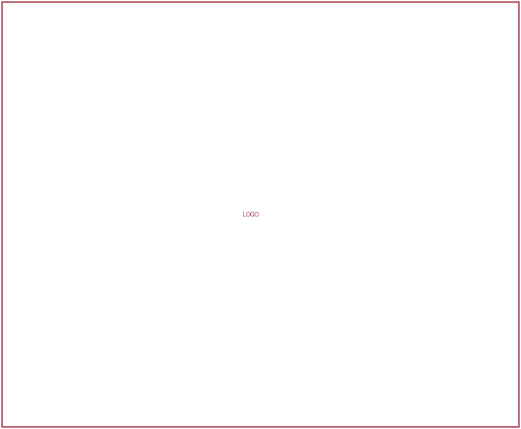
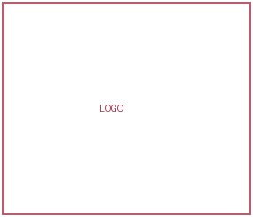
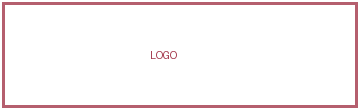
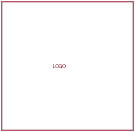
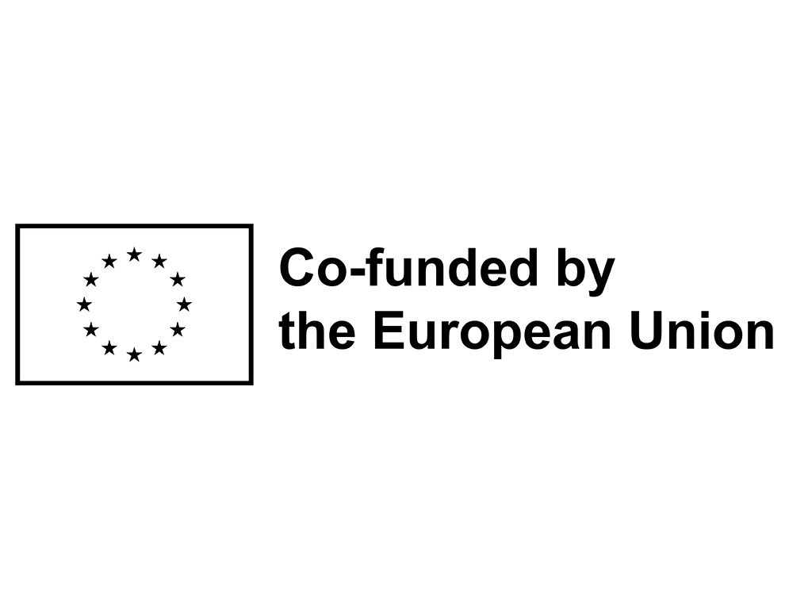

SAFE CLICK
Изграждане на дигитална устойчивост и киберкапацитет в младежката работа
- Дати
- 1 септември 2026 г. – 31 август 2027 г.
- Държави
- България, Сърбия, Румъния

С радост обявяваме старта на нашия нов проект по Еразъм+ „SAFE CLICK – Изграждане на дигитална устойчивост и киберкапацитет в младежката работа“.
Проектът стартира официално на 1 септември 2026 г. и ще продължи до 31 август 2027 г., като обединява организации от България, Сърбия и Румъния за укрепване на дигиталната устойчивост, осведомеността за киберсигурността и дигиталната безопасност в младежкия и неправителствения сектор.
Партньорство
Проектът се координира от Международен център за младежки дейности (България) в партньорство с Inicijativa Vizija (Сърбия) и Asociația Colțul Tinerilor din Vest (Румъния).
-
Координатор Международен център за младежки дейности България

-
Партньор Inicijativa Vizija Сърбия

-
Партньор Asociația Colțul Tinerilor din Vest Румъния

Заедно се стремим да подкрепим младежките работници и неправителствените организации да бъдат по-осведомени за дигиталните рискове и по-добре подготвени да защитават своите организации, данни и младите хора, с които работят.
Какво искаме да постигнем?
Основните ни цели са:
- Оценка на нивото на осведоменост за киберсигурността и дигиталната подготвеност сред неправителствените организации и младежките работници.
- Идентифициране на най-честите пропуски в знанията, рисковите организационни практики и дигиталните заплахи.
- Разработване на уеб базиран инструмент за самооценка на дигиталните рискове, който дава практични и персонализирани препоръки.
- Укрепване на знанията и уменията на младежките работници в областта на киберсигурността чрез международен обучителен курс.
- Разработване на практични методологии, образователни сесии и реалистични сценарии за киберсигурност за използване в неформалното образование.
Предстоящи дейности
По време на проекта партньорите ще работят заедно по няколко ключови дейности:
-
Оценка на осведомеността за киберсигурността и картографиране на заплахите
В трите партньорски държави ще бъде проведено проучване чрез анкети и интервюта с неправителствени организации и младежки работници, за да се идентифицират основните им предизвикателства, уязвимости и ниво на подготвеност в областта на киберсигурността.
-
Разработване на дигитален инструмент за киберустойчивост на неправителствените организации
Въз основа на резултатите от проучването партньорите ще разработят безплатен уеб базиран инструмент за самооценка, който ще помага на организациите да оценяват своите дигитални рискове и да получават практични препоръки как да подобрят киберсигурността си.
-
Обучителен курс за изграждане на капацитет и съвместно разработване на образователни инструменти
Младежки работници от партньорските държави ще участват в международен обучителен курс, посветен на дигиталната безопасност и киберсигурността. По време на дейността участниците ще допринесат и за разработването на практични образователни методологии и материали.
-
Национални мултипликационни събития
Три заключителни събития, по едно във всяка партньорска държава, ще представят резултатите от проекта, ще демонстрират дигиталния инструмент за самооценка и ще запознаят с образователните ресурси, разработени по време на проекта.
Кой ще има полза?
Основните целеви групи на SAFE CLICK са младежките работници и служителите на неправителствените организации.
Младите хора също ще имат полза от проекта чрез местни уъркшопи, кампании и образователни дейности, провеждани от обучени младежки работници.
Проектът цели да включи най-малко 50 организации, да обучи най-малко 24 младежки работници, да организира най-малко 12 местни образователни дейности и да достигне до най-малко 300 млади хора. Като част от образователните ресурси на проекта ще бъде разработена и библиотека от най-малко 15 реалистични сценария на дигитални заплахи.
Очаквани резултати
До края на проекта неправителствените организации и младежките работници ще имат достъп до практични и свободно достъпни ресурси, които могат да им помогнат да разбират и управляват по-добре дигиталните рискове.
Проектът ще създаде уеб базиран инструмент за самооценка на дигиталните рискове, колекция от реалистични сценарии за киберсигурност и наръчник с методологии и образователни материали, които младежките работници могат да използват и адаптират в собствените си дейности.
Всички резултати от проекта ще останат свободно достъпни онлайн, което ще позволи на други младежки и неправителствени организации в Европа да ги използват и след края на проекта.
- Инструмент за самооценка на дигиталните рискове свободен достъп
- Реалистични сценарии за киберсигурност свободен достъп
- Наръчник с методологии и образователни материали свободен достъп
Защо е важно?
Дигиталната безопасност става все по-важна за младежките и неправителствените организации, които редовно работят с лична и чувствителна информация, но често имат ограничен достъп до специализирана ИТ поддръжка и обучения по киберсигурност.
SAFE CLICK цели да направи киберсигурността по-практична, разбираема и достъпна, като помага на организациите да развият по-безопасни дигитални практики и дава възможност на младежките работници да предават тези знания на младите хора в своите общности.
Очаквайте скоро!
Скоро ще споделим повече информация за проучването по проекта, международното обучение, дигиталния инструмент за самооценка, местните дейности и възможностите за включване.
Следвайте пътя на SAFE CLICK и се присъединете към нас в изграждането на по-безопасен и по-дигитално устойчив младежки сектор.

Номер на проекта 2026-1-BG01-KA210-YOU-000453902
Финансирано от Европейския съюз. Изразените възгледи и мнения обаче принадлежат изцяло на автора(ите) и не отразяват непременно възгледите и мненията на Европейския съюз или на Европейската изпълнителна агенция за образование и култура (EACEA). Нито Европейският съюз, нито EACEA могат да носят отговорност за тях.